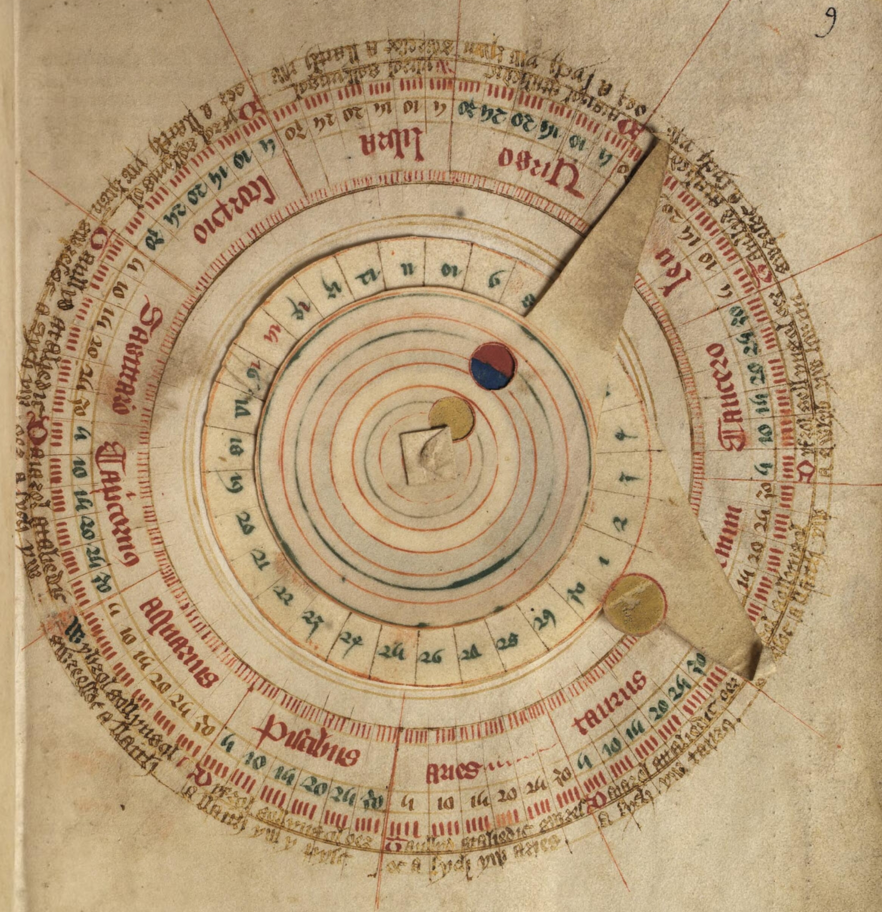
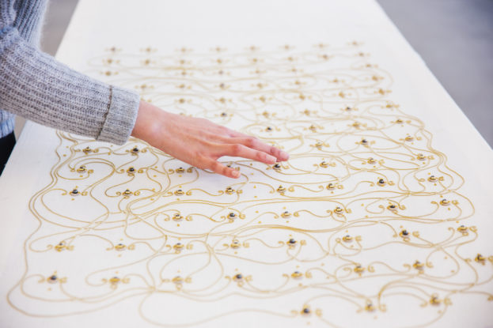

organismo digital


Interfaces
"La tecnologÃa es la interfaz humana activa con el mundo material. Sin embargo, la palabra se usa incorrectamente con frecuencia para referirse solamente a las tecnologÃas enormes, complejÃsimas y especializadas de las décadas pasadas, apoyadas por la explotación masiva de recursos tanto humanos como naturales." - Ursula K. Le Guin
"Las herramientas se vuelven teorÃas"
Walter Ong: Tres momentos que definen la cultura: la memoria oral, la escritura y la digitalidad.
Memoria
Juego de memoria / campo semántico (10 minutos)
¿Qué sucede en la memoria cuando cambia el modo dominante de guardar información? ¿Hacer registro, o archivo?
Giordano Bruno y el Arte de la Memoria: imágenes como recursos 'textuales' que vienen desde la memoria espacial para ayudar a fines retóricos y dialécticos

Ars Notoria: libro del siglo XIII con técnicas mentales para comunicarse con ángeles y otro tipo de entidades
Volvelle: una computadora antigua análoga
la escritura
"Las fronteras de un libro," escribió Michel Foucault mucho antes de que surgieran estos modos de escribir hipervÃnculos o recuperar datos de la red, "nunca están claramente definidas: más allá de la marea, las primeras lÃneas, y el último punto, más allá de su configuración interna y su forma autónoma, está atrapado en un sistema de referencias a otros libros, otros textos, otras oraciones: es un nodo dentro de una red." - Sadie Plant en Zeros+Ones
¿A qué hace referencia tu pieza? ¿Cuáles son algunos de sus nodos?
0101010101010101
●○ Jacquard fue una de los primeras personas en automatizar un proceso de tejido con tarjetas perforadas
●○●○● Ada Lovelace, construyó su motor analÃtico sobre las bases automatizadas de la máquina de Jacquard y en diálogo con el trabajo de Charles Babbage, quien veÃa en las fábricas prototipos de máquinas pensantes. En Motor AnalÃtico, según Babbage, tenÃa dos funciones iguales a las de una planta de textiles: almacenamiento y cálculo.
●○●○●○●○ Alan Turing, con su máquina universal, llevó lo mecánico a lo virtual

Máquina Diferencial de Charles Babbage

Tejido de memoria de cuerda núcleo

LOL (Little Old Ladies) Memory
Embroidered Computer por Irene Posch

Khipu por Constanza Piña
codificar/decodificar
Piensa en algún medio de comunicación en tu infancia: la tele, la radio, el periódico, la computadora. ¿Qué hacÃas mientras lo usabas? ¿Lo usabas solx? ¿O con quién compartÃas ese uso?
¿De qué forma podrÃas representar y guardar esa memoria en un textil? ¿De qué forma podrÃas representarla y guardarla en una computadora?
Posibilidades y lÃmites del medio
"Un medio es un medio es un medio. Por lo tanto, no se puede traducir. Transferir mensajes de un medio a otro siempre implica reformarlos para que se ajusten a nuevos estándares y materiales." Friedrich A. Kittler en Discourse Networks 1800/1900
¿Qué se pierde cuando una forma de escribir, dialogar, pensar, imaginar y recordar domina? ¿Qué se gana?
Siempre hay gatekeepers: Platón y la escritura, los luditas y la máquina de escribir, los iconoclastas y las imágenes
- Khipu de Constanza Piña
- Return Home de Tyler Yin
- Affirmations for my Existence de Zainab Aliyu
- Establishing Secure Connection de Sarah Cheikah
- Estado Sólido del Mvseo Privado
Sus piezas
♡ Discusión sobre sus piezas ♡